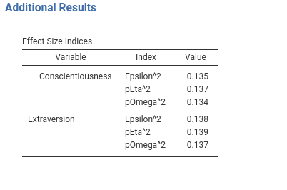
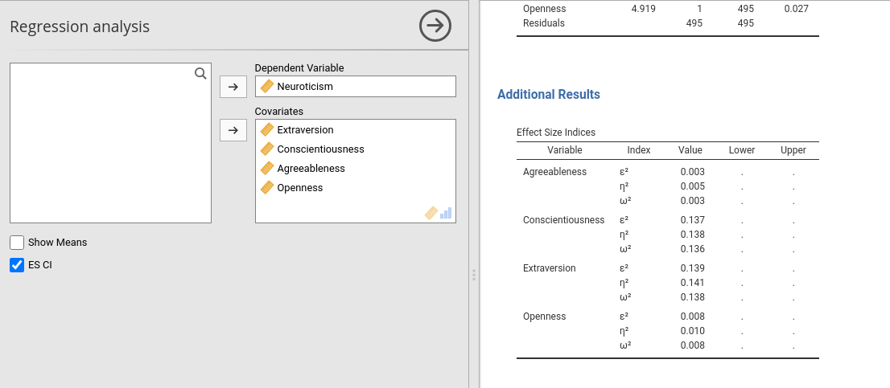
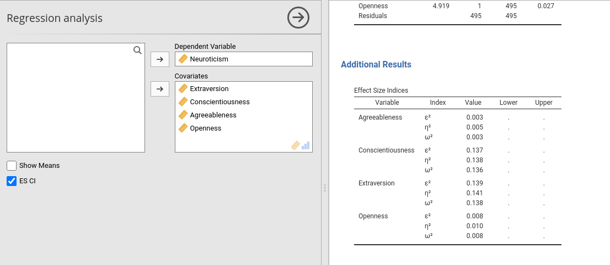

Chapter 7 Formatting Tables
7.1 Introduction
Now we can tune the look of our tables. We should, however, do a better job in initializing the tables. So far, we did not do anything in the .init() function but running the $initTab() function. Properly initiating the table makes the whole user experience much smoother and pleasant. To convince yourself about that, consider than our little module is very fast now, because we simply run a regression with a few variables. Ponder that your model may take time to obtain the results, maybe because you need to bootstrap, user has billions of data points, or the user has a huge dataset with hundreds of variables.
To appreciate the need for a proper initialization of the tables, let slow down our Estimate() function in the Runner by changing it like this, re-install and try changing variables or options in the module GUI, as a user would do (we removed the warnings and errors in this chapter).
estimate=function() {
formula <- jmvcore::composeFormula(self$analysis$options$dep,self$analysis$options$covs)
self$model <- stats::lm(formula,data=self$analysis$data)
Sys.sleep(3)
},What happens with a slightly slower estimation is that the tables will expand and shrink every time the user changes some option, and the whole results section will flicker in an unpleasant way (try yourself after compiling the module with the last changes). To avoid that, we can set the dimensions of the table and fill some columns of it in the $initTable() function phase. SmartTable can be initiated by passing data in the init() phase, data that are typically the name of the rows, such as variables names, or some other fixed information.
SmartTable objects $initTab() function inquires the initSource property (if set) or the runner init_tablename() function to get info to fill the tables in the init phase. You want to pass very fast and simple information, and let the actual data to come in in the .run() phase, when we call the $runTable function.
Let’s start with effects table, which does not look very good.

First, the variables are alternating in the column Variable, which is not a natural way to read the results. It would be better to have each variable with all its effect sizes and then another variable, and so on. So, first we sort the output by variable in the Runner.R filling function.
run_effects=function() {
eps <- effectsize::epsilon_squared(self$model)
eps_df <- data.frame(var=eps$Parameter,index="Epsilon^2",value=eps$Epsilon2)
eta <- effectsize::eta_squared(self$model)
eta_df <- data.frame(var=eta$Parameter,index="pEta^2",value=eta$Eta2)
omega <- effectsize::omega_squared(self$model)
omega_df <- data.frame(var=eta$Parameter,index="pOmega^2",value=omega$Omega2)
tab <- as.data.frame(rbind(eps_df,eta_df,omega_df))
tab <- tab[order(tab$var),] # we order the results by variable
return(tab)
}
Now we can format the table to our aestetic needs.
7.2 Initializing the table
At the .init() time, we know what the covariates that will be listed in the table and the labels of the effect sizes we want to show. We can pass this info to the table $initTable by defining in Runner a init_additional_effects() function. Recall that in the .init() phase we have all the options, the data definitions, but no estimation nor the actual data. This is made on purpose to keep the .init() phase light and fast.
In the Runner, we write.
#...#
init_additional_effects=function() {
covs <- self$analysis$options$covs
es <- c("pEpsilon","pEta","pOmega")
tab <- as.data.frame(expand.grid(covs,es))
names(tab)<- c("var","index")
tab <- tab[order(tab$var),]
return(tab)
},
#...#We are passing to the init_[tablename] function a data.frame with the var and the index labels, that we know as soon as the GUI is updated. If you play around with the GUI of your module, you can notice that now the Effects Size Indices gets ready very quickly, with the correct number of rows, and it is finalized with the numerical values when the estimation is done.
(remove the Sys.sleep(3) for future usage)
Note: one does not need to prepare a init_tablename() function for each table. It should be done for tables that require some formatting before hand, such as the formatting options discussed below.
7.3 Combining below
(ref. SmartTable$CombineBelow)
At this point, we can notice that the repetition of the Variable name makes the table a bit heavy (column name is var). We can make it look better by removing the repeated labels and let them print only when a new variable name appears. This can be done in the .r.yaml file by adding combineBelow: true property.
#...#
type: Table
visible: true
columns:
- name: var
title: "Variable"
type: text
combineBelow: true
...
#...#The results are more pleasantly looking.

7.4 Add spaces between rows
(ref. SmartTable$spaceBy)
Another way to make tables more pleasant looking is to add some space between rows that are someway logically separated. In our table Effects Size Indices we can separate a bit the sets of indices between variables. We can use SmartTable property $spacyBy. spaceBy accepts a column name or a vector of indices, indicating where to put the space. When the argument is a column name, or a vector of names, the space is inserted when the column changes value. In practices, we define the SmartTable like this.
#...#
atable <- SmartTable$new(self$results$additional$effects,private$.runner)
atable$spaceBy <- "var"
# put the SmartTable in the list
private$.tables[[length(private$.tables)+1]]<-atable
#...#
7.5 Indent some row value
(ref. SmartTable$indent)
Another stylistic change we can make to our tables is to indent some row to improve readability. Indent can be passed to a SmartTable as a vector of rows indices. The values of the first column at the provided indices will be indent. As a quick example,
we indent the first row label of the effects table.
#...#
atable<-SmartTable$new(self$results$additional$effects,private$.runner)
atable$spaceBy <- "var"
atable$indent <- 1
# put the SmartTable in the list
private$.tables[[length(private$.tables)+1]]<-atable
#...#
7.6 Showing columns when needed
There are applications in which one or more columns of a table are not always necessary, so you want to show them only when needed. An example would be to show the confidence intervals of our effect size indices only when the user requires them flagging an option. In other situations, you do not know in advanced if the column is needed, because its relevance depends on the obtained results. jamovi allows handling these cases.
Linking a column visibility to an option is the easiest way. Lets’ define an option in the .a.yaml file to toggle confidence intervals appearance.
- name: show_ci
title: ES CI
type: Bool
default: falseand change effects table in the .r.yaml file
#...#
- name: additional
type: Group
title: Additional Results
items:
- name: effects
title: Effect Size Indices
type: Table
visible: true
columns:
- name: var
title: "Variable"
type: text
combineBelow: true
- name: index
title: "Index"
type: text
- name: value
title: "Value"
type: number
format: zto
- name: es_ci_lower
title: Lower
type: number
visible: (show_ci)
- name: es_ci_upper
title: Upper
type: number
visible: (show_ci)
#...#You can see that the two new columns, es_ci_lower and es_ci_upper have their visibility linked to the option show_ci. After compiling, we get the following behavior (you will fill up with data the new columns as usual, not shown here).
 

7.7 Showing columns programmatically
Another case is when a column visibility depends on your results. For example, in certain mixed models, emmeans R package can be used to obtain the estimated marginal means, that are returned with their CI and the degrees of freedom. However, when the number of rows in the data are too many, the DF are set to Inf (because the CI uses the z-test). So we want to hide the degrees of freedom column after Inf values are produced by our code.
To try out, we can reproduce this case in our Runner filling function of the table anova like this. We draw a uniform random number, if it is larger than .5 we set the df1 column to Inf.
#...#
run_main_anova=function() {
.anova <- as.data.frame(car::Anova(self$model,type=3))
names(.anova) <- c("nothing","df1","test","p")
.anova$df2 <- self$model$df.residual
test <- runif(1,0,1)>.5 # we simulate unneeded columns not expected apriori
if (test) .anova$df1 <- Inf
return(.anova)
},
#...#If you try installing and play around with the GUI (just toggle one option on and off), every now and then you would see all Inf in the df column. When this happens, we want to hide the column. With this aim, we add the property $hideOn to the definition of the SmartTable in .b.R file.
atable<-SmartTable$new(self$results$main$anova,private$.runner)
## here we hide `df1` when it receives NaN
atable$hideOn <- list(df1=Inf)
private$.tables[[length(private$.tables)+1]]<-atableThe property $hideOn accepts a named list, with format list(columname=value) where value is the value that, when received in the data, hides the column. Installing the module now and playing around should produce the expected behavior.
7.8 Changing column names programmatically
Another case is when mutually alternative columns should be shown programmatically (after the results are produced). A case is when car::Anova() is applied to different linear models: It may produce a F-test or a Chi-square test. Obviously, one can program each case separately (with an S3 method, for instance), or simply change the name of the column reporting the test depending on the results.
To exemplify, let assume that you need to change the name of a column programmatically. You only need to attach to the data.frame passed to the table the attribute titles, as a named list of the form list(columnname="new title"). As follows:
run_main_anova=function() {
.anova <- as.data.frame(car::Anova(self$model,type=3))
names(.anova) <- c("nothing","df1","test","p")
.anova$df2 <- self$model$df.residual
.anova$var <- rownames(.anova)
test1 <- runif(1,0,1)>.5 # we simulate unneeded columns not expected apriori
if (test1) .anova$df1 <- Inf
test2 <- runif(1,0,1)>.5
if (test2) attr(.anova,"titles")<-list(test="Chi-squares")
return(.anova)
},If you try out (flag and unflag some option in the GUI), you’ll see that the F-test column appears as Chi-square every now and then.
7.9 Super Titles
(ref. SmartTable$superTitle)
The effect size table with the confidence intervals does not look fine (ignore that we did not fill the new column, it is not the point now).
The Upper and Lower columns would look much better if they had a title over them, showing that they refer to the 95% confidence intervals. We can do that with supertitles. With SmartTable you simply add a supertitle as follows:
atable<-SmartTable$new(self$results$additional$effects,private$.runner)
# ... #
atable$superTitle <- list(es_ci_lower="95% confidence interval",es_ci_upper="95% confidence interval")
private$.tables[[length(private$.tables)+1]]<-atableThe property $superTitle accepts a list of the format list(columnname1="super title",columnname2="super title",...). Here we tell the table to put a super title to the two es_ci_lower and es_ci_upper, as shown here.

7.10 Something else
As a final touch, we can remove the ugly string representing the greek letters in table additional_effects. You can pass to a text columns any ascii value or UTF value. We can adjust the init_[tablename]() function to pass those values.
init_additional_effects=function() {
covs <- self$analysis$options$covs
es <- c('\u03b5','\u03b7','\u03c9') ## greek UTF for letter
es <- paste(es,'\u00B2',sep="") # UTF for square
tab <- as.data.frame(expand.grid(covs,es))
names(tab)<- c("var","index")
tab <- tab[order(tab$var),]
return(tab)
},
run_additional_effects=function() {
eps <- effectsize::epsilon_squared(self$model)
eps_df <- data.frame(var=eps$Parameter,value=eps$Epsilon2)
eta <- effectsize::eta_squared(self$model)
eta_df <- data.frame(var=eta$Parameter,value=eta$Eta2)
omega <- effectsize::omega_squared(self$model)
omega_df <- data.frame(var=eta$Parameter,value=omega$Omega2)
tab <- as.data.frame(rbind(eps_df,eta_df,omega_df))
tab <- tab[order(tab$var),]
return(tab)
},
Notice that we define the columns var and index in init_additional_effects function, and we no longer pass these columns in the run_additional_effects. The general principle is: formatting in init_tablename, data in run_tablename.
7.11 Adding columns programmatically
There are occasions in which one cannot anticipate how many columns a table should have. A typical example is when you need to show a matrix, like a correlation matrix. Let us make an example planning to add a correlation matrix among all the covariates and the dependent variable.
First, we create a new table in the .r.yaml file with only one column, the column that will contain the variables names.
- name: correlations
title: Correlations
type: Table
visible: true
columns:
- name: var
title: "Variable"
type: textThen we add a SmartTable to the .b.R file.
# set up the means SmartTable
obj<-SmartTable$new(self$results$correlations,private$.runner)
obj$expandOnInit <- TRUE
obj$expandFrom <- 2
private$.tables[[length(private$.tables)+1]]<-objWe define the SmartTable as all the other tables, but we set the $expandOnInit property to TRUE and $expandFrom set to 2. These two properties tell the table to expand columnwise adding any column that will be passed in the init_correlations() function in the Runner. The new columns are added from the second column on. By default, they are added on the left of the table.
Now we prepare the functions to fill the table in Runner.R
init_correlations=function() {
vars<-c(self$analysis$options$dep,self$analysis$options$covs)
tab<-as.data.frame(matrix(".",nrow = length(vars),ncol=length(vars)))
names(tab) <- vars
tab$var <- vars
return(tab)
}In the init function we pass a data.frame which has K+1 columns where K is the number of covariates and K rows. Notice that we fill the var variable with the names of the covariate and all other values equal to ".". SmartTable would consider "." as an empty value, but as compared with passing NA, will not consider the table filled, and thus will update it with the runTable.
Now we set the filling function:
#...#
run_correlations=function() {
vars<-c(self$analysis$options$dep,self$analysis$options$covs)
tab<-as.data.frame(cor(self$analysis$data[,vars]))
return(tab)
}
#...#